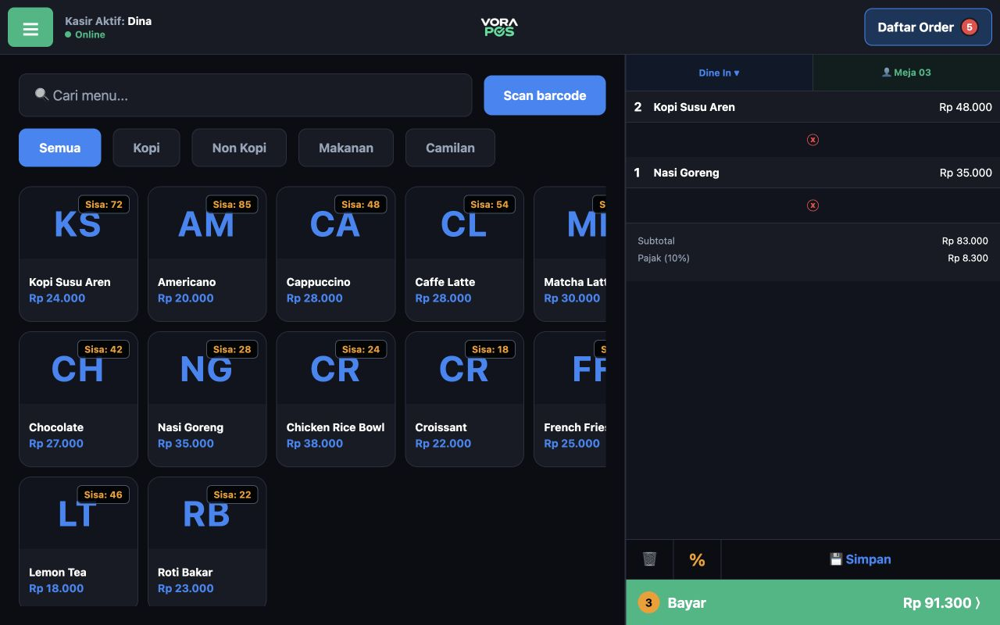
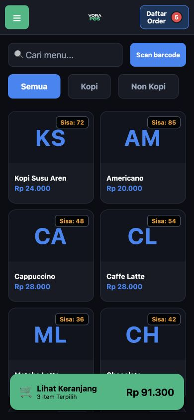

Pesanan banyak?
Tetap tertata.
Simpan pesanan, atur ekstra, dan bagi tagihan. Kasir bisa mengikuti cara pelanggan Anda memesan.
Kenali alur kasirKASIR ANDROID UNTUK USAHA ANDA
Usaha boleh makin sibuk. Urusan kasir tetap simpel. Catat penjualan, kelola stok, dan pahami hasil usaha dalam satu aplikasi.


Tampilan aplikasi · data demo
Satu partner untuk
ritme usaha Anda.
WAKTUNYA NAIK KELAS
Ganti catatan yang tercecer dengan alur kerja yang saling terhubung.
Simpan pesanan, atur ekstra, dan bagi tagihan. Kasir bisa mengikuti cara pelanggan Anda memesan.
Kenali alur kasirDari restock sampai opname, telusuri pergerakan produk dan selisih persediaan dalam satu tempat.
Lihat pengelolaan stokTinjau penjualan, produk terlaris, dan laba operasional berdasarkan transaksi serta biaya yang dicatat.
Lihat laporan usahaKENALAN DENGAN VORA
Fitur yang dipakai setiap hari.
Disatukan dalam alur yang mudah diikuti.
Dine in, takeaway, hingga pencatatan pesanan ojek online. Siapkan menu, pilih ekstra, lalu lanjutkan ke pembayaran.
Atur owner, manager, kasir, serta absensi staf.
Catat modal awal, kas masuk/keluar, dan hasil tutup kasir.
Hubungkan printer ESC/POS yang kompatibel.
USAHA ANDA, DALAM PANTAUAN
Gunakan HP atau tablet Android untuk operasional. Buka dashboard melalui browser untuk melihat laporan outlet dari data yang sudah tersinkron.
Login dashboardMasuk dengan email akun VORA POS Anda.
Pilih tampilan vertikal atau landscape sesuai perangkat dan kebutuhan meja kasir.
Transaksi yang didukung tersimpan di perangkat. Sinkronisasi berjalan saat internet tersedia dan aplikasi aktif.
Perlu login awal dan akses aktif. Beberapa fitur tetap membutuhkan internet.Pantau penjualan, produk terlaris, dan metode pembayaran tanpa harus berada di depan kasir.
MULAI TANPA BINGUNG
Hubungi kami lewat WhatsApp. Sampaikan jenis usaha, perangkat, dan kebutuhan kasir Anda.
Minta demo alur kasir, stok, dan laporan. Cek kecocokan perangkat serta printer yang dipakai.
Konfirmasi paket, pembayaran, dan aktivasi. Siapkan profil usaha serta katalog produk Anda.
INVESTASI KECIL UNTUK KASIR YANG LEBIH RAPI
Pilih masa langganan yang pas untuk langkah usaha Anda.
Harga normal Rp2.988.000/tahun
untuk 12 bulan
Setara ±Rp66.583/bulan · dibayar tahunan
2 × harga normal tahunan Rp5.976.000
untuk 24 bulan
Setara ±Rp62.458/bulan · dibayar 2 tahunan
Harga untuk langganan aplikasi. Cakupan outlet/perangkat, pajak, aktivasi, dan harga perpanjangan dikonfirmasi bersama admin sebelum pembayaran. Angka bulanan adalah perbandingan biaya, bukan paket cicilan.
SEBELUM ANDA MEMULAI
Kami bantu cocokkan VORA dengan kebutuhan usaha Anda.
Tanya langsung via WhatsApp ↗Perbedaannya adalah masa langganan dan harga. Paket promo 1 tahun Rp799.000, sedangkan 2 tahun Rp1.499.000. Paket 2 tahun lebih hemat Rp99.000 dibanding membeli dua paket promo tahunan. Konfirmasi kebutuhan outlet/perangkat serta ketentuan paket sebelum pembayaran.
VORA POS digunakan di HP atau tablet Android. Pilih tampilan vertikal atau landscape sesuai perangkat Anda. Sampaikan model perangkat kepada admin untuk mengecek kecocokan sebelum berlangganan.
Transaksi yang didukung dapat dicatat lokal pada perangkat yang sudah login dan memiliki akses aktif. Data akan disinkronkan saat koneksi kembali tersedia dan aplikasi aktif. Login/verifikasi awal, absensi, dan sebagian fitur membutuhkan internet. Jangan menghapus data aplikasi atau uninstall ketika masih ada transaksi yang belum tersinkron.
VORA mendukung printer ESC/POS yang kompatibel: Bluetooth untuk kasir dan LAN/Wi-Fi untuk dapur. Pilihan kertas 57/58, 76, dan 80 mm. Kompatibilitas bergantung pada model dan koneksi, sehingga uji cetak diperlukan. Anda juga dapat menjalankan kasir tanpa printer.
Saat ini VORA mencatat metode pembayaran seperti tunai, QRIS, transfer, e-wallet, dan kartu yang Anda atur. Pembayaran non-tunai perlu diperiksa oleh kasir pada layanan pembayaran terkait; belum berupa konfirmasi otomatis melalui payment gateway.
Klik “Minta demo” atau pilih paket untuk membuka WhatsApp admin. Setelah akun aktif, login aplikasi menggunakan email Anda. Tombol “Login dashboard” menuju dashboard.vorakasir.com untuk melihat laporan outlet dari transaksi yang telah tersinkron.
LANGKAH BERIKUTNYA MILIK ANDA
Mulai dari demo. Temukan alur yang pas, lalu pilih paket dengan yakin.